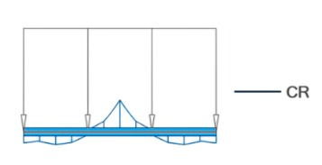

Projetos Selecionados

Edifício Residencial – Engenharia Estrutural & BIM
Desenvolvimento de modelo estrutural em betão armado, com análise de cargas, combinações e verificação dos estados limites, integrado a processos BIM e apoio à compatibilização entre disciplinas.

Restaurante Tipo Bangalô – Estrutura Mista & Coordenação BIM
Desenvolvimento e apoio ao projeto estrutural de restaurante, com solução estrutural mista em alvenaria e madeira. Análise do sistema resistente e apoio à compatibilização entre arquitetura e estrutura em ambiente BIM, com foco na construtibilidade e coerência técnica do projeto.
Projeto 01 — Edifício Multinível em Betão Armado
Edifício multinível em betão armado modelado em ambiente BIM, com análise global da estrutura nos Estados Limites de Serviço (SLS) e Estados Limites Últimos (ULS). Foram analisados os deslocamentos globais, os esforços internos em vigas e pilares e a interação esforço normal–momento (N–M), seguindo metodologia alinhada ao Eurocódigo 2.
- Sistema estrutural: Betão armado (pórticos)
- Número de pisos: 5 níveis
- Tipologia: Edifício multinível
- Abordagem: Estados Limites (SLS e ULS)
- Autodesk Revit + Robot Structural Analysis
- NBR 6118
- Conceitos compatíveis com o Eurocódigo 2
- Modelação estrutural em ambiente BIM
- Análise e interpretação de esforços internos
- Apoio à compatibilização entre disciplinas
Projeto 01 — Detalhamento Estrutural
Elemento Estrutural Representativo — Pilar em Betão Armado
Geometria e Material
- Seção transversal: 45 × 45 cm
- Altura livre típica: pavimento tipo
- Cobrimento nominal: c_nom = 30 mm
- Betão armado moldado in loco
Armadura Longitudinal
- Arranjo simétrico das barras longitudinais
- Configuração compatível com a geometria da seção
- Configuração adotada para verificação à flexo-compressão
Verificação Estrutural
- Pilar verificado em compressão simples e flexo-compressão
- Atendimento aos critérios do Estado Limite Último (ELU)
- Consideração da interação esforço normal–momento (N–M)
Projeto 01 — Resultados Estruturais (ULS)
Verificação do pilar à flexo-compressão em Estado Limite Último, com base na interação esforço normal–momento.
Viga Representativa — Momento Fletor (ULS)
Diagrama utilizado como base para o dimensionamento da armadura longitudinal.
Os resultados apresentados correspondem a elementos representativos do modelo estrutural, utilizados para verificação e dimensionamento segundo os critérios normativos em Estado Limite Último.
Projeto 02 — Restaurante Tipo Bangalô
Edificação de uso comercial (restaurante) desenvolvida com sistema estrutural misto, combinando alvenaria estrutural e elementos em madeira.
O modelo estrutural foi elaborado em ambiente BIM, com foco na compatibilização entre diferentes materiais, compreensão do fluxo de cargas e apoio à definição construtiva do sistema adotado.
- Tipologia: Edificação térrea — uso comercial (restaurante)
- Sistema estrutural: Alvenaria estrutural + elementos em madeira
- Cobertura: Estrutura em madeira com telhado cerâmico
- Software: Autodesk Revit
- Modelagem BIM: Estrutura e compatibilização arquitetônica

- Modelagem estrutural em ambiente BIM
- Compatibilização entre estrutura e arquitetura
- Organização construtiva do sistema híbrido
- Apoio à definição técnica do projeto